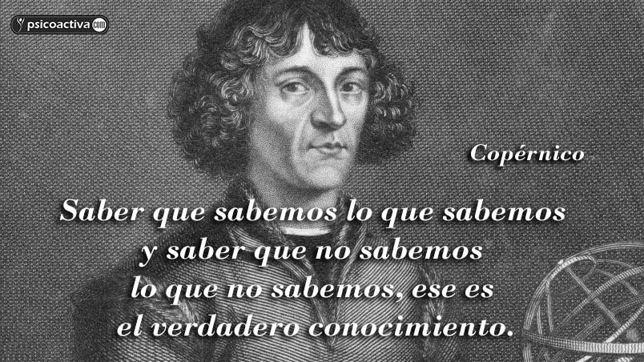

Copernico
Nicolás Copérnico fue un astrónomo polaco del siglo XV y XVI (1473-1543) conocido principalmente por desarrollar la teoría heliocéntrica. Descubrió que la Tierra giraba alrededor del Sol y no al revés, como en su época se creía. Además, descubrió que la Tierra rotaba completamente sobre sí misma cada 24 horas y que daba una vuelta completa al Sol en ciclos de un año.Copérnico nació el 19 de febrero de 1473 en la ciudad de Toruń, en la actual Polonia, en el seno de una familia acomodada. A los 10 años, tras el fallecimiento de su padre, su tío decidió hacerse cargo de su educación. Ingresó en la Universidad de Cracovia a los 18 años y posteriormente se trasladó a Italia a estudiar derecho canónico. Allí, en Italia, en plena época renacentista, se interesó por diversas disciplinas como la pintura, las matemáticas, la astronomía, la filosofía e incluso la medicina. Aunque llegó a destacar en algunas de ellas, en la astronomía encontró su mayor pasión, dedicando el resto de su vida al estudio del espacio estelar.

Su filosofia
La filosofía de Copérnico se basa en la idea de que nuestras percepciones y conocimientos pueden estar sujetos a revisiones y cambios fundamentales. Copérnico nos enseñó que nuestras creencias arraigadas pueden ser cuestionadas y reemplazadas por nuevas ideas y teorías más acordes con la evidencia empírica.La teoría de Copérnico según la cual la Tierra gira alrededor del Sol y, además, da una vuelta cada día en torno a su eje, significaba la ruptura con el sistema geocéntrico de Ptolomeo y con las concepciones religiosas en él basadas sobre la Tierra como elegida de la divinidad y sobre la situación privilegiada del hombre en el universo.
Como impacta nuestra vida
El impacto de la teoría de Copérnico fue enorme. Su obra desafió las creencias arraigadas y planteó preguntas fundamentales sobre el lugar del ser humano en el cosmos. Además, abrió la puerta a nuevas formas de pensar y de investigar el universo.Durante años, el clérigo polaco desarrolló una teoría que cambiaría de manera radical nuestra visión del mundo: desplazó a la Tierra del centro del universo y la puso a dar vueltas alrededor del sol. Y la ciencia venció a la teología. Copérnico es considerado no solo el padre de la astronomía, sino el impulsor del cambio que nos permitiría entender nuestro lugar en el Universo.
